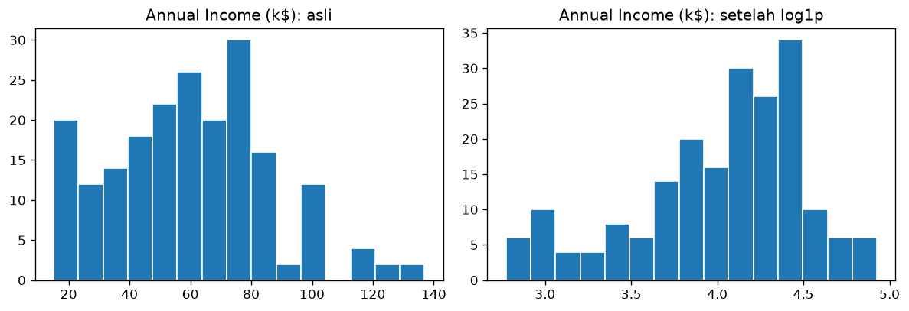

Bab 9 — Data Transformation and Encoding¶
Learning Objectives¶
Setelah mempelajari bab ini, kamu mampu:
- Menjelaskan mengapa kolom teks harus diubah menjadi angka sebelum clustering.
- Menerapkan binary encoding dengan
map()dan one-hot encoding denganpd.get_dummies(). - Menjelaskan mengapa memberi kode 0, 1, 2 pada kategori tanpa urutan bisa menyesatkan.
- Menerapkan transformasi logaritma dan menilai apakah ia membantu.
- Mengelompokkan angka menjadi kategori (binning) dengan
pd.cut().
Introduction¶
Algoritma clustering berbasis jarak hanya mengerti angka. Kolom Gender berisi teks Female dan Male, jadi harus diubah dulu. Proses mengubah kategori menjadi angka disebut encoding.
Selain itu, kadang bentuk sebaran angka perlu diubah supaya lebih cocok untuk algoritma. Ini disebut transformation. Contohnya transformasi logaritma yang menekan nilai-nilai besar.
Dua topik ini sering ditaruh dalam satu bab karena sama-sama mengubah representasi data tanpa mengubah maknanya.
Fundamental Concepts¶
Teknik encoding¶
| Teknik | Cara | Cocok untuk |
|---|---|---|
| Binary encoding | Dua kategori menjadi 0 dan 1 | Kolom dengan dua nilai, misalnya Gender |
| One-hot encoding | Satu kolom baru (0/1) untuk setiap kategori | Kolom kategori tanpa urutan dengan banyak nilai |
| Ordinal encoding | Kategori menjadi 1, 2, 3 sesuai urutan | Kolom yang punya urutan, misalnya kecil, sedang, besar |
Mengapa tidak asal memberi nomor?¶
Kalau kita memberi kode Jakarta = 0, Bandung = 1, Surabaya = 2, algoritma jarak menganggap Jakarta lebih dekat ke Bandung (selisih 1) daripada ke Surabaya (selisih 2). Padahal ketiga kota itu setara, tanpa urutan. Kita secara tidak sengaja menciptakan urutan palsu. One-hot encoding menghindari masalah ini.
Transformasi sebaran¶
| Transformasi | Rumus | Efek |
|---|---|---|
| Logaritma | \(\log(1 + x)\) | Menekan nilai besar, berguna untuk sebaran yang miring ke kanan |
| Akar kuadrat | \(\sqrt{x}\) | Efek serupa tetapi lebih lembut |
| Binning | Memotong angka menjadi kelompok | Mengubah angka menjadi kategori berurutan |
Detailed Explanation¶
Kapan perlu transformasi?¶
Transformasi log paling berguna ketika sebaran sangat miring ke kanan, misalnya pendapatan atau harga rumah, di mana sebagian besar nilai kecil tetapi ada ekor panjang nilai sangat besar. Setelah di-log, ekor itu memendek.
Transformasi bukan jimat
Transformasi hanya berguna jika masalahnya ada. Pada data kita, Annual Income (k$) ternyata tidak sangat miring (skewness 0,32). Kita akan lihat bahwa log malah membuatnya miring ke arah sebaliknya. Selalu periksa hasilnya, jangan menerapkan transformasi secara otomatis.
Jebakan one-hot¶
- Jumlah kolom bertambah. Kolom dengan 50 kategori menjadi 50 kolom baru.
- Kolom
drop_first. Kadang satu kolom dibuang karena informasinya bisa disimpulkan dari yang lain (jikaGender_Female = 0, pastiMale). Untuk clustering, biasanya kita menyimpan semua agar jaraknya simetris.
Mathematical Foundation¶
Transformasi logaritma yang aman untuk nilai nol:
Di NumPy, fungsinya np.log1p(x). Menambah 1 mencegah \(\ln(0)\) yang tidak terdefinisi.
One-hot encoding untuk sebuah kategori dengan \(K\) nilai mengubah satu nilai menjadi vektor sepanjang \(K\) yang berisi satu angka 1 dan sisanya 0. Misalnya Male menjadi \((0, 1)\) dan Female menjadi \((1, 0)\) pada urutan kolom Gender_Female, Gender_Male.
Python Implementation¶
Kita kerjakan dalam tujuh langkah kecil. Setiap potongan kode diikuti penjelasannya. Skrip lengkapnya ada di examples/level-2/09_transformation_encoding.py, dan versi notebook-nya di notebooks/level-2/09-data-transformation-and-encoding.ipynb.
Langkah 1 — Siapkan alat dan muat data¶
import numpy as np
import pandas as pd
import matplotlib.pyplot as plt
pd.set_option("display.width", 120)
pd.set_option("display.max_columns", None)
DATA_PATH = "data/mall_customers.csv"
df = pd.read_csv(DATA_PATH)
Penjelasan:
numpy(np) menyediakan fungsi matematika seperti logaritma.pandasmengolah tabel,matplotlibmembuat grafik.- Dua baris
pd.set_optionhanya mengatur tampilan agar tabel lebar tidak terpotong. dfadalah tabel data pelanggan.
Langkah 2 — Binary encoding dengan map¶
df_biner = df.copy()
df_biner["Gender_code"] = df_biner["Gender"].map({"Female": 0, "Male": 1})
print(df_biner[["Gender", "Gender_code"]].head())
print("\nJumlah per kode:")
print(df_biner["Gender_code"].value_counts())
Gender Gender_code
0 Male 1
1 Male 1
2 Female 0
3 Female 0
4 Female 0
Jumlah per kode:
Gender_code
0 112
1 88
Name: count, dtype: int64
Penjelasan:
df.copy()membuat salinan agar tabel asli tidak berubah.map({"Female": 0, "Male": 1})mengganti setiap nilai menurut kamus:Femalemenjadi 0,Malemenjadi 1.- Hasilnya disimpan di kolom baru
Gender_code. KolomGenderasli tidak dihapus. value_counts()memastikan jumlahnya sama dengan sebelumnya: 112 untuk kode 0 dan 88 untuk kode 1.
Langkah 3 — One-hot encoding dengan get_dummies¶
df_onehot = pd.get_dummies(df, columns=["Gender"], dtype=int)
print(df_onehot.head())
print("\nKolom sekarang:", df_onehot.columns.tolist())
CustomerID Age Annual Income (k$) Spending Score (1-100) Gender_Female Gender_Male
0 1 19 15 39 0 1
1 2 21 15 81 0 1
2 3 20 16 6 1 0
3 4 23 16 77 1 0
4 5 31 17 40 1 0
Kolom sekarang: ['CustomerID', 'Age', 'Annual Income (k$)', 'Spending Score (1-100)', 'Gender_Female', 'Gender_Male']
Penjelasan:
pd.get_dummies(df, columns=["Gender"], dtype=int)mengganti kolomGenderdengan satu kolom per kategori:Gender_FemaledanGender_Male.- Setiap baris punya angka
1pada kolom kategorinya dan0pada yang lain. dtype=intmembuat isinya angka 0/1. Tanpa ini, pandas versi baru mengisinyaTrue/False.- Perhatikan
columns.tolist():Genderhilang, digantikan dua kolom baru.
Langkah 4 — Mengapa nomor urut bisa menipu¶
# Bayangkan tiga kategori tanpa urutan, diberi kode 0, 1, 2.
kode = {"Jakarta": 0, "Bandung": 1, "Surabaya": 2}
jarak_jakarta_bandung = abs(kode["Jakarta"] - kode["Bandung"])
jarak_jakarta_surabaya = abs(kode["Jakarta"] - kode["Surabaya"])
print("Jarak Jakarta-Bandung :", jarak_jakarta_bandung)
print("Jarak Jakarta-Surabaya:", jarak_jakarta_surabaya)
print("Padahal ketiganya setara, tanpa urutan.")
Penjelasan:
- Ini demonstrasi kecil, bukan dari data pelanggan. Kita memberi kode 0, 1, 2 pada tiga kota.
abs(a - b)menghitung selisih mutlak, yaitu jarak pada garis bilangan.- Hasilnya: Jakarta tampak "lebih dekat" ke Bandung (1) dibanding ke Surabaya (2), padahal ketiganya setara. Inilah urutan palsu yang dihasilkan oleh pengkodean nomor.
Langkah 5 — Transformasi logaritma¶
income = df["Annual Income (k$)"]
income_log = np.log1p(income) # log(1 + x)
print("Skewness sebelum log:", round(income.skew(), 2))
print("Skewness sesudah log:", round(income_log.skew(), 2))
print("\nRentang sebelum:", income.min(), "sampai", income.max())
print("Rentang sesudah:", round(income_log.min(), 2), "sampai", round(income_log.max(), 2))
Skewness sebelum log: 0.32
Skewness sesudah log: -0.74
Rentang sebelum: 15 sampai 137
Rentang sesudah: 2.77 sampai 4.93
Penjelasan:
np.log1p(income)menghitung \(\ln(1 + x)\) untuk setiap nilai pendapatan.skew()mengukur kemiringan (Bab 3). Kita bandingkan nilainya sebelum dan sesudah transformasi.- Rentang nilai juga ditampilkan: dari 15–137 menjadi sekitar 2,77–4,93. Rentangnya menyusut karena log menekan nilai besar.
Langkah 6 — Melihat efek pada grafik¶
fig, axes = plt.subplots(1, 2, figsize=(10, 3.5))
axes[0].hist(income, bins=15, edgecolor="white")
axes[0].set_title("Annual Income (k$): asli")
axes[1].hist(income_log, bins=15, edgecolor="white")
axes[1].set_title("Annual Income (k$): setelah log1p")
fig.tight_layout()
plt.show()

Penjelasan:
- Dua histogram berdampingan: kiri sebelum, kanan sesudah transformasi.
axes[0]danaxes[1]adalah grafik pertama dan kedua.- Kita membandingkan bentuk sebarannya dengan mata, bukan hanya angka skewness.
Langkah 7 — Binning: mengelompokkan angka¶
df_bin = df.copy()
df_bin["Age Group"] = pd.cut(
df_bin["Age"],
bins=[17, 30, 45, 60, 70],
labels=["18-30", "31-45", "46-60", "61-70"],
)
print(df_bin[["Age", "Age Group"]].head())
print("\nJumlah pelanggan per kelompok usia:")
print(df_bin["Age Group"].value_counts().sort_index())
Age Age Group
0 19 18-30
1 21 18-30
2 20 18-30
3 23 18-30
4 31 31-45
Jumlah pelanggan per kelompok usia:
Age Group
18-30 62
31-45 72
46-60 49
61-70 17
Name: count, dtype: int64
Penjelasan:
pd.cutmemotong angka menjadi kelompok.binsadalah batas-batasnya,labelsadalah namanya.- Hasilnya kolom baru
Age Groupyang bertipe kategori. value_counts().sort_index()menghitung anggota tiap kelompok, lalu mengurutkannya sesuai urutan kelompok.- Ingat: setelah di-binning, kolomnya kategori, jadi untuk clustering ia perlu di-encode lagi. Selain itu, binning membuang detail (usia 18 dan 30 dianggap sama).
Code Explanation¶
Ringkasan fungsi baru di bab ini:
| Perintah | Kegunaan |
|---|---|
kolom.map({...}) |
Mengganti nilai menurut kamus |
pd.get_dummies(df, columns=[...], dtype=int) |
One-hot encoding |
np.log1p(x) |
\(\ln(1 + x)\) |
kolom.skew() |
Kemiringan sebaran |
pd.cut(kolom, bins, labels) |
Binning |
kolom.value_counts().sort_index() |
Menghitung kategori, diurutkan menurut kategori |
How to Run¶
Jalankan dari folder utama proyek:
Skrip menyimpan satu gambar di docs/assets/level-2/. Untuk notebook:
Expected Output¶
Semua output berasal dari eksekusi nyata skrip (pandas 3.1.1, numpy, matplotlib 3.11.2, Python 3.14.7). Output setiap langkah ditampilkan langsung di bawah kodenya pada bagian Python Implementation.
Cara membaca output:
- Binary encoding:
Femalemenjadi 0 (112 orang),Malemenjadi 1 (88 orang). - One-hot: kolom
GenderdigantiGender_FemaledanGender_Male. - Urutan palsu: jarak Jakarta–Bandung 1, Jakarta–Surabaya 2, padahal setara.
- Log: skewness pendapatan sebelum 0,32, sesudah −0,74. Nilainya tidak membaik: sebaran sekarang miring ke kiri (ekor panjang di sisi nilai kecil), dan secara angka lebih jauh dari 0 dibanding sebelumnya. Rentang menyusut dari 15–137 menjadi 2,77–4,93.
- Pada grafik: histogram asli punya ekor tipis di kanan. Setelah log, ekor itu memendek tetapi muncul ekor di kiri.
- Binning: 62 pelanggan di kelompok 18–30, 72 di 31–45, 49 di 46–60, dan 17 di 61–70.
Practical Examples¶
Keputusan untuk Gender. Karena hanya dua nilai, binary encoding atau one-hot sama-sama bisa dipakai. Untuk clustering, ingat bahwa kolom 0/1 punya rentang 0–1, jauh lebih kecil dari Annual Income (15–137). Tanpa penyamaan skala (Bab 10), kolom ini hampir tidak berpengaruh pada jarak.
Keputusan untuk log pendapatan. Berdasarkan hasil di atas, transformasi log tidak membantu pada kolom ini: skewness tidak mendekati 0, malah menjauh. Maka kita tidak menerapkannya pada Annual Income (k$). Ini contoh keputusan berdasarkan bukti, bukan kebiasaan.
Kapan log berguna. Kalau suatu kolom berekor panjang di kanan, misalnya pendapatan pada populasi umum dengan sedikit orang sangat kaya, skewness bisa bernilai besar (misalnya di atas 1) dan log biasanya membantu. Dataset ini tidak seperti itu.
Kapan binning berguna. Binning membantu menjelaskan hasil (misalnya "kelompok usia 18–30"). Namun untuk clustering, mempertahankan angka aslinya biasanya lebih baik karena tidak membuang detail.
Hands-on Exercises¶
- Lakukan one-hot encoding pada kolom
Age Group(hasil binning). Berapa kolom baru yang terbentuk? - Terapkan
np.sqrtpadaAnnual Income (k$), lalu bandingkan skewness-nya dengan log. - Mengapa one-hot lebih tepat daripada kode 0, 1, 2 untuk kota?
- Jika
Genderdi-one-hot, mengapa kita tidak harus membuang salah satu kolomnya untuk clustering? - Terapkan
np.log1ppadaSpending Score (1-100). Apakah skewness-nya membaik?
Jawaban
- Ada empat kelompok (
18-30,31-45,46-60,61-70), jadi terbentuk 4 kolom baru. Gunakanpd.get_dummies(df_bin, columns=["Age Group"], dtype=int). - Jalankan sendiri.
sqrtefeknya lebih lembut dari log, tetapi karena sebaran pendapatan tidak sangat miring, hasilnya juga tidak perlu diharapkan banyak berubah. - Kode 0, 1, 2 menciptakan urutan dan jarak palsu antar kota. One-hot membuat setiap kota berjarak sama dari yang lain.
- Dengan menyimpan kedua kolom, kedua kategori berjarak sama dari titik asal, sehingga perlakuannya simetris. Membuang satu kolom membuat satu kategori berada di titik asal dan yang lain tidak, sehingga perlakuannya tidak seimbang dalam perhitungan jarak.
- Jalankan
np.log1p(df["Spending Score (1-100)"]).skew()dan bandingkan dengan −0,05 (nilai asli di Bab 3). Skor belanja sudah hampir simetris, jadi log kemungkinan besar tidak berguna.
Troubleshooting¶
| Masalah | Penyebab | Solusi |
|---|---|---|
Hasil get_dummies berisi True/False |
Pandas versi baru memakai bool bawaan |
Tambahkan dtype=int |
map menghasilkan NaN |
Ada nilai di kolom yang tidak ada dalam kamus (misalnya beda huruf besar-kecil) | Bersihkan teks dulu (Bab 8) dan periksa unique() |
RuntimeWarning: divide by zero pada np.log |
Ada nilai 0 | Pakai np.log1p |
Log menghasilkan NaN |
Ada nilai negatif | Log tidak bisa untuk nilai negatif. Geser data dulu atau pakai transformasi lain |
| Jumlah kolom membengkak setelah one-hot | Kategori terlalu banyak | Gabungkan kategori jarang, atau pertimbangkan teknik lain |
Summary¶
- Algoritma jarak butuh angka, jadi kategori harus di-encode.
- Binary untuk dua nilai, one-hot untuk kategori tanpa urutan, ordinal untuk kategori berurutan.
- Kode 0, 1, 2 pada kategori tanpa urutan menciptakan urutan palsu.
- Transformasi log berguna untuk sebaran sangat miring ke kanan. Periksa hasilnya: pada
Annual Income (k$)log malah menambah kemiringan (0,32 menjadi −0,74), jadi tidak dipakai. - Binning mempermudah penjelasan tetapi membuang detail.
References¶
- pandas documentation:
pandas.get_dummiesdanpandas.cut. - NumPy documentation:
numpy.log1p. - scikit-learn documentation: Preprocessing data.